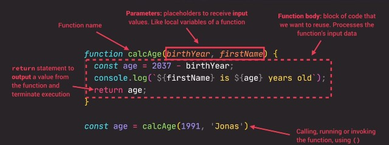

TEST
Notes
Check sources tab in dev console to see all of my coding examples!Personal Study Stuff
Function Review
There are 3 main function types that can be used in javascript.
1. Function Declaration: Functions that can be used before it's declared.
2. Function Expression: Essentially a function value stored in a variable.
3. Arrow Function: Great for a quick one-line functions. Has no this keyword.
Anatomy of a Function
A function has a lot of moving parts that we need to remember. I saw this while watching a video and I think it explains it very well.
